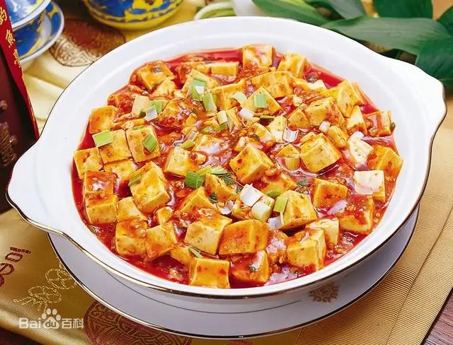
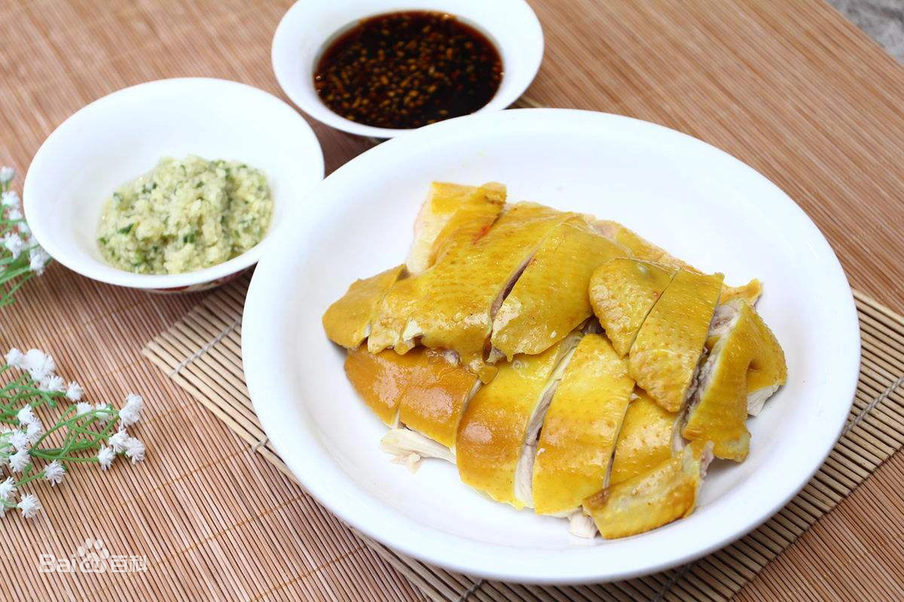
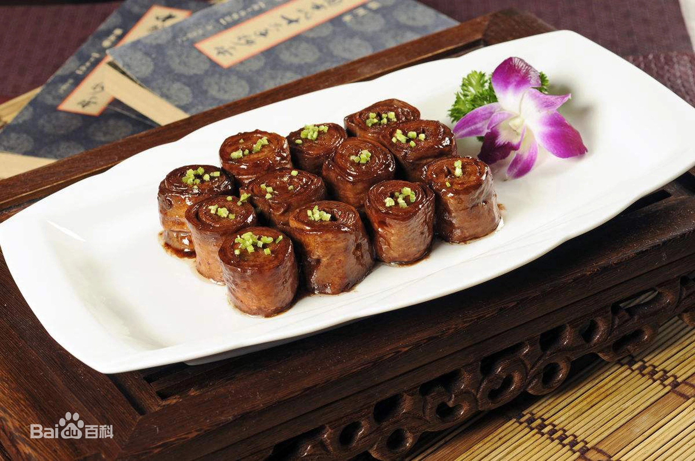

-

麻婆豆腐
川菜麻婆豆腐（拼音：má pó dòu fu；英文：sauteed tofu in hot and spicy sauce），是四川地区传统名菜之一，属于川菜，主料为：豆腐，辅料为：蒜苗、牛肉沫(其他肉也可以)，调料为：豆瓣、辣椒面和花椒面、酱油、生抽、老抽、糖、淀粉等，麻来自花椒，辣来自辣椒面，此菜成菜麻、辣、鲜、香、烫、脆、嫩、酥，将川菜麻辣味型的特点展现的淋漓尽致，如今，麻婆豆腐远渡重洋，在美国、加拿大、英国、法国、越南、新加坡、马来西亚、日本、澳大利亚等国安家落户，从一味家常小菜一跃而登上大雅之堂，成了国际名菜。
-

白斩鸡
粤菜白斩鸡又叫白切鸡，是一道中华民族特色菜肴，是一道经典的粤菜，如广府菜 、客家菜中都有、在南方菜系中普遍存在。始于清代的民间酒店，因烹鸡时不加调味白煮而成，食用时随吃随斩，故称“白斩鸡”。白斩鸡形状美观，皮黄肉白，肥嫩鲜美，滋味异常鲜美，十分可口，肉色洁白皮带黄油，具有葱油香味，葱段打花镶边，食时佐以姜蓉、蒜泥、酱油，保持了鸡肉的鲜美、原汁原味，食之别有风味。2018年9月，被评为“中国菜”之上海十大经典名菜，小绍兴白斩鸡、振鼎鸡白斩鸡、泰煌鸡白斩鸡在上海都是家喻户晓的品牌佳肴。
-

九转大肠
鲁菜九转大肠（Braised intestines in brown sauce），是中国山东省济南市的传统名菜，属于山东菜系。九转大肠是以猪大肠为主料，加以葱、姜、芫荽等配料，通过煮、烧等烹饪技法制作而成，成菜后有辣觉，并且酸、甜、香、咸四味俱全，色泽红润，质地软嫩。2018年9月10日，“九转大肠”入选“中国菜”中的“山东十大经典名菜”名单。